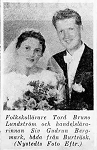

Siv Gudrun Bergmark
Handleslärare 1958, kontorist 1960.
| Född: | 1934 Storbrännan, Burträsk fs, Burträsk sn. [1] | Nedkomstort: Skellefteå stad |
|---|
| Vigsel: | 1958 Burträsk fs, Burträsk sn. [2] |
|---|
| Levde: | 1959 Trasten 1, Burträsk, Burträsk fs, Burträsk sn. [2] |
|---|
| Levde: | 1960 Björnen 9, Burträsk, Burträsk fs, Burträsk kn. [2] |
|---|
| Levde: | 1971 Burträsk, Burträsk fs, Burträsk kn. [3] |
|---|
| Levde: | 1981 Atleten 3, Ringv 19, Fredriksberg, Burträsk, Burträsk fs, Skellefteå kn. [4] |
|---|
| Levde: | 1991 Norrbackag 3 F, Skellefteå, Sankt Olovs fs, Skellefteå kn. [5] |
|---|
| Levde: | 2008 Norrbölegatan 11 1TR, Skellefteå. [6] |
|---|
Personhistoria
| Årtal | Ålder | Händelse |
|---|
| 1934 |
|
Födelse 1934 Storbrännan, Burträsk fs, Burträsk sn [1] |
| 1958 |
|
Vigsel Tord Bruno Lundström 1958 Burträsk fs, Burträsk sn [2] |
| 1959 |
|
Levde Tord Bruno Lundström 1959 Trasten 1, Burträsk, Burträsk fs, Burträsk sn [2] |
| 1960 |
|
Levde Tord Bruno Lundström 1960 Björnen 9, Burträsk, Burträsk fs, Burträsk kn [2] |
| 1963 |
|
Dottern Boel Margareta Lundström föds 1963 Burträsk, Burträsk fs, Burträsk kn [3] |
| 1965 |
|
Sonen Tord Staffan Lundström föds 1965 Burträsk, Burträsk fs, Burträsk kn [3] |
| 1971 |
|
Levde Tord Bruno Lundström 1971 Burträsk, Burträsk fs, Burträsk kn [3] |
| 1974 |
|
Modern Elin Kristina Vikström dör 1974-04-12 Storbrännan 1:30, Storbrännan, Burträsk fs, Skellefteå kn [7] |
| 1981 |
|
Levde Tord Bruno Lundström 1981 Atleten 3, Ringv 19, Fredriksberg, Burträsk, Burträsk fs, Skellefteå kn [4] |
| 1985 |
|
Fadern Sven Valfrid Bergmark dör 1985-10-25 Storbrännan 1:30, Storbrännan, Burträsk fs, Skellefteå kn [8] |
| 1991 |
|
Levde Tord Bruno Lundström 1991 Norrbackag 3 F, Skellefteå, Sankt Olovs fs, Skellefteå kn [5] |
| 2008 |
|
Levde Tord Bruno Lundström 2008 Norrbölegatan 11 1TR, Skellefteå [6] |
| 2012 |
|
Maken Tord Bruno Lundström dör 2012-04-12 Norrbölegatan 11, Lgh 1102, Skellefteå, Sankt Olovs fs, Skellelteå kn [9] |
Källor
| [1] | Burträsk (AC) AIIa:3f (1925-1943) Bild 2130 / sid 1955 |
| |
| | |
| [2] | Mtl Sveriges befolkning 1960 |
| |
| | |
| [3] | Mtl Västerbottens län 1971 |
| |
| | |
| [4] | Mtl Västerbottens län 1981 |
| |
| | |
| [5] | Mantalslängd 1991, Västerbottens län |
| |
| | |
| [6] | https://www.ratsit.se/sok/avancerat/person |
| |
| | |
| [7] | Mtl 71 / RTB 74 |
| |
| | |
| [8] | RTB 85 / SPAR 90 |
| |
| | |
| [9] | FK 13 / man91 |
| |
|
|  |
| 1958-07-18. Vigselfoto i Norra Västerbotten. |
|
{kind=link}